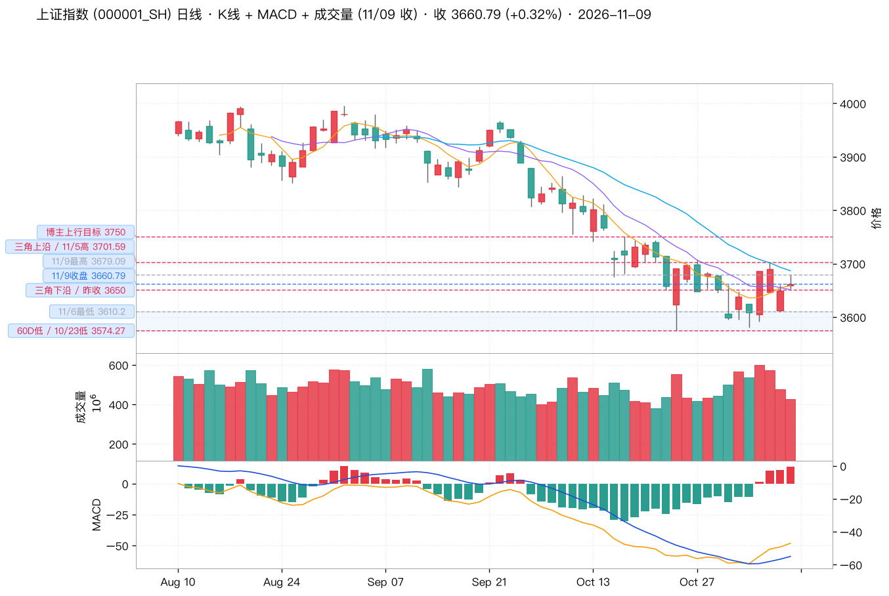
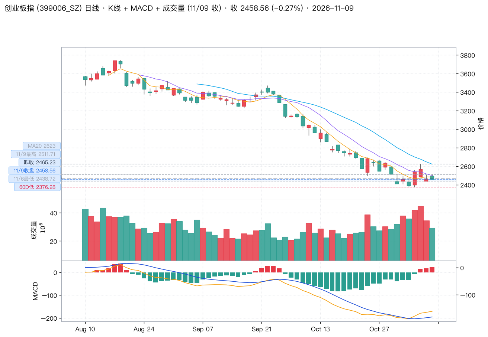
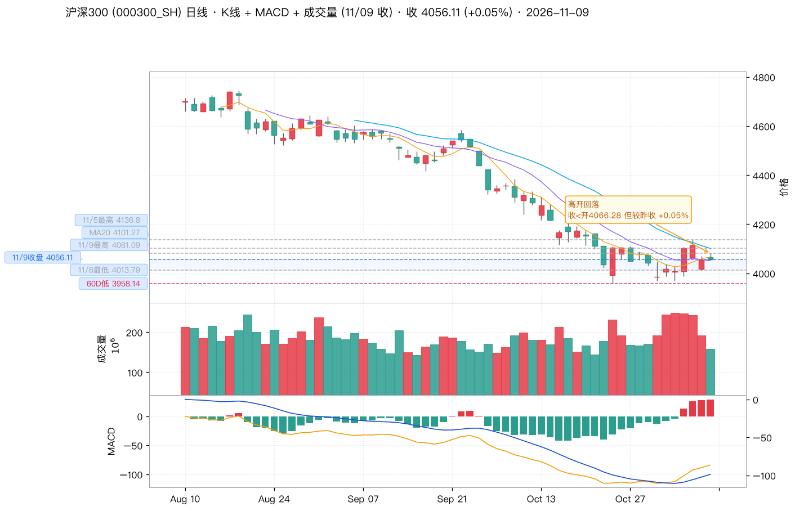
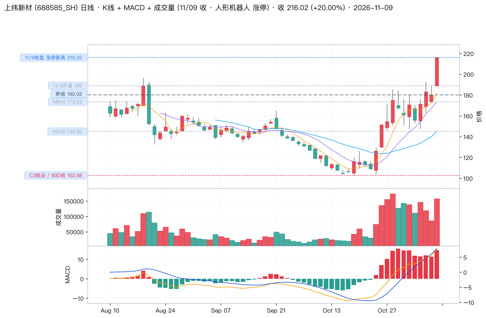
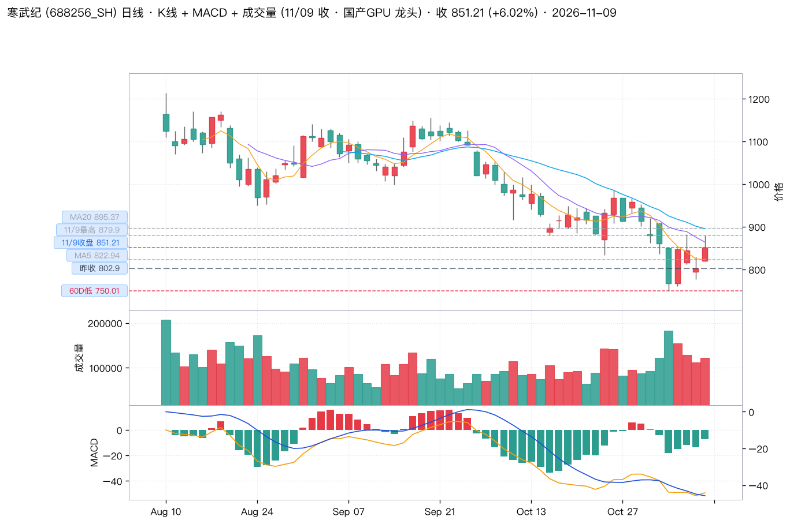
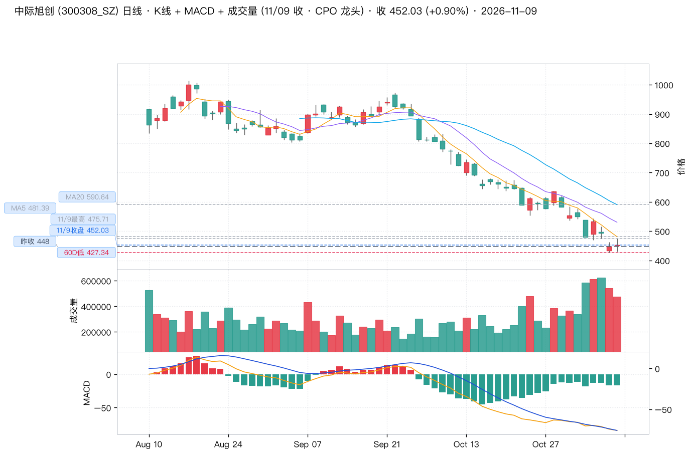

核心立场：🟢 看多本周反弹 —— 09:22「上周探低成功回稳，本周主打反弹」（👍2.25 万 / 💬2718，全窗口互动第一）。 但同日 14:22「市场暂时缺乏持续的领涨板块」+ 14:56「指数在收小三角」说明： 他认可方向，不认可追高。10:49 那句「逢低分批布局，不要追涨」才是本期真正的操作纲领。
指数红、个股绿、成交缩、涨停翻倍 —— 这是典型的「权重与小票分化 + 题材接力」结构。 博主抓住了两头：大盘定性反弹（09:22），板块点名机器人 / CPO / GPU（09:40 / 10:02 / 14:34+21:30）， 同时用 14:22 那句「缺乏持续领涨板块」给自己留了退路。 本期 3 个板块全部来自他当日的具名点名，没有一条是推断出来的。
| 时间 | 👍 | 💬 | 信号 | 原文 | 判读 |
|---|---|---|---|---|---|
| 11/08 16:26 | 12011 | 568 | 🟡 风险警告 | 之前的白酒+大消费、光伏+新能源及本轮AI+科技…………每一轮热炒后的泡沫破裂都极度类同，没有什么不一样！所以，炒股一定要知深浅，懂进退，把握好度！ | 全窗口唯一的空头警告，且直指本轮 AI+科技。次日他虽判「本周主打反弹」，但这条定了他对科技板块的天花板认知——反弹可以参与，泡沫不可恋战。 |
| 11/09 09:22 | 22538 | 2718 | 🟢 大盘判断 | 简单粗暴的分析：上周探低成功回稳，本周主打反弹……鼓励的点个赞或者8888 | 本期最强信号（点赞 2.25 万 / 评论 2718，全窗口第一）。「探低成功回稳」比上期的「探低抵抗」进了一步：从「抵抗」升级为「回稳」。 |
| 11/09 09:40 | 9258 | 179 | 🟢 板块点名 | 人形机器人龙头最近是连续反击，从植物人又变成了机器人了！ | 点名人形机器人。「连续反击」＝不止一天的反弹；「从植物人变机器人」是自嘲式夸张，形容从僵死到活跃。 |
| 11/09 10:02 | 8663 | 170 | 🟢 板块点名 | 光纤、光模块（CPO），出现拉起！ | 点名 CPO / 光模块。「出现拉起」比「连续反击」弱一档——盘中刚起，未确认持续性。 |
| 11/09 10:49 | 13656 | 1182 | 🟢 操作建议 | 逢低分批布局，不要追涨……明白666 | 本期唯一具体操作指令（点赞 1.37 万 / 评论 1182）。「分批 + 不追涨」明确否定了追高涨停票的玩法。 |
| 11/09 14:19 | 6168 | 158 | ⚪ 外盘速报 | 日本股市涨1293点。 | 外盘情绪佐证。实测日经 225 当日收盘 +1340.73 点（+2.33%），博主盘中读数 1293 点，方向与量级一致。 |
| 11/09 14:22 | 7788 | 323 | 🟡 盘面观察 | 市场暂时缺乏持续的领涨板块！ | 对当日最关键的一条否定。明确否认「已出现持续主线」，意味着他认可反弹但不认可追板块。 |
| 11/09 14:34 | 6625 | 312 | 🟢 板块点名 | #黄仁勋出轨对象#与GPU有关！ | 借热搜点名 GPU。属情绪型催化，非基本面判断。 |
| 11/09 14:56 | 9531 | 360 | 🟡 技术判断 | 指数在收小三角，等待短线打破平衡！ | 本期最精确的技术定性。实测 11/09 沪指振幅仅 26.04 点（0.71%），3 周区间 3574.27~3750.77 持续收敛，形态判断与数据吻合。 |
| 11/09 15:00 | 14982 | 745 | ⚪ 情绪 | 今天不用写评论……支持一下即可！ | 收盘固定互动帖，点赞 1.5 万。无信息量，但反映当日情绪偏暖（收盘后不发复盘＝无需安抚）。 |
| 11/09 16:24 | 4245 | 85 | ⚪ 话题 | #英伟达#还马斯克更了解人性！ | 英伟达相关话题，无 A 股操作含义。 |
| 11/09 17:54 | 5052 | 390 | ⚪ 鸡汤 | 坚持别人无法坚持的坚持，才能拥有别人无法拥有的拥有，路虽远行则将至，事虽难做者可成！ | 收盘后鸡汤帖。博主在反弹兑现日发鸡汤，通常对应心情不错。 |
| 11/09 18:40 | 4894 | 569 | 🟢 个股点名 | 上纬从大盘C3低点时至今已经涨了一倍多。宇树从大盘C3低点时至今涨了88%……还有一批是30%至50%幅度的。由此可见，在C3底部布局的话，确实要选股水平一流才行！你是几流？ | 全窗口唯一具名个股。实测「上纬」= 上纬新材 688585，10/19 低点 102.68 → 11/09 收 216.02，+110.4%，与「涨了一倍多」完全吻合。 |
| 11/09 19:19 | 2993 | 178 | ⚪ 生活 | 据说穿粉色裙子容易成为幸福的女人？ | 无关。 |
| 11/09 21:30 | 521 | 13 | ⚪ 话题 | #黄仁勋妻子买了40件黑色皮夹克#科技界叫他皮衣哥！ | 无关 A 股。 |
| 11/09 21:30 | 710 | 39 | 🟢 板块点名 | #黄仁勋出轨对象公司曾采购300亿芯片#利好国内GPU芯片！ | 对 14:34 的加码确认。同一天两次提 GPU，且第二次直接写「利好」，是他当日板块态度里最明确的一条。 |

11/09 开 3659.02 / 高 3679.09 / 低 3653.05 / 收 3660.79，振幅仅 26.04 点（0.71%） —— 博主「指数在收小三角」的数据证据。 支撑带 3574–3610（浅蓝底纹）；博主自 10/26 起的区间体系 3650 – 3700 – 3750 已标注。昨收 3649.18 与「三角下沿 3650」几乎重合。

11/09 高开 +1.19%（开 2494.63）后一路走低，收 2458.56 即为全天最低（低 2458.01），典型高开低走。 绿 K 且当日确实下跌，颜色与涨跌方向一致。2438.72（11/06 低）是第一道防守，2376.28 是 60 日低。

开 4066.28 → 收 4056.11，绿 K 但当日微涨 +0.05%，图中已标「高开回落」。权重股当日基本走平， 与「指数红、个股绿」的分化结构吻合：扛指数的是权重，杀个股的是中小盘。
| 板块 | 样本均值 | 上涨家数 | 样本明细（当日涨跌幅 %） | 依据 |
|---|---|---|---|---|
| 人形机器人 | +2.78% | 8 / 8 | 雷赛智能 +5.60 · 拓普集团 +4.50 · 绿的谐波 +3.90 · 双环传动 +3.30 · 三花智控 +1.70 · 兆威机电 +1.70 · 五洲新春 +0.90 · 鸣志电器 +0.70 | 博主点名 09:40「连续反击」 |
| GPU / 算力芯片 | +1.64% | 4 / 6 | 寒武纪 +6.02 · 芯原股份 +2.88 · 海光信息 +1.26 · 景嘉微 +0.70 · 龙芯中科 −0.50 · 兆易创新 −0.50 | 博主点名 14:34 + 21:30 双条 |
| CPO / 光模块 | +0.86% | 5 / 6 | 新易盛 +2.27 · 光迅科技 +2.20 · 中际旭创 +0.90 · 天孚通信 +0.70 · 太辰光 +0.50 · 剑桥科技 −1.40 | 博主点名 10:02「出现拉起」 |
| 端侧AI 上期主线 | +0.18% | 5 / 10 | 汇顶 −1.90 · 澜起 −1.90 · 中科创达 +0.50 · 晶晨 +2.00 · 恒玄 +2.10 …（走平，已无弹性） | 落选 |
| 算力租赁 上期主线 | −0.14% | 2 / 6 | 润建 −0.40 · 光环新网 −0.60 · 宝信 −1.30 · 科华 −0.30 · 浪潮 +0.80 · 紫光股份 +1.10 | 落选 |
| 固态电池 上期主线 | −2.87% | 0 / 6 | 宁德 −2.20 · 天赐 −3.10 · 亿纬 −6.70 · 当升 −1.90 · 孚能 −2.10 · 国轩 −1.10 | 连续第二周杀跌 |
为什么排第一：8 只样本 8/8 全红，均值 +2.78%，跑赢创业板 3.05 个百分点。 这是当日唯一做到「全员上涨」的板块 —— 其余两个板块都有明确的下跌成员（GPU 2 只、CPO 1 只）。 博主用的词是「连续反击」，说明他看到的不是一天的脉冲。
弹性来源：雷赛智能 +5.60（运动控制）、拓普集团 +4.50（执行器总成）、绿的谐波 +3.90（谐波减速器）—— 涨的是核心零部件，不是整机。整机里最强的上纬新材直接涨停（见下方个股）。
为什么排第二：这是他当日唯一点名两次的方向，且第二次直接写「利好」。 6 只样本均值 +1.64%，4/6 上涨，寒武纪 +6.02% 独领（成交 103.9 亿）。
但这条逻辑的成色要打折：两次点名都挂在「#黄仁勋出轨对象#」热搜话题下 —— 这是情绪型催化（借热搜把注意力引到 GPU），不是产业逻辑判断。 而且板块内部已经分化：龙芯中科 −0.50、兆易创新 −0.50 同日下跌。 「利好国内GPU芯片」是情绪外溢，不是订单落地。
为什么排第三：6 只样本 5/6 上涨，均值只有 +0.86% —— 上涨面最广，但弹性最小。 博主用的词是「出现拉起」，比机器人的「连续反击」弱一档：盘中刚起，未确认持续性。 他 10:02 说的话，到 14:22 就补了「缺乏持续领涨板块」——某种程度上是自我修正。
值得注意的一点：中际旭创当日成交 217.3 亿，是三只推荐个股里最大的， 但股价只涨 0.90%（盘中最高 475.71，最低 430.10，振幅 10.2%）。 巨量 + 小涨 = 多空在 450 一线激烈换手，这是分歧位不是启动位。
| 代码 | 名称 | 收盘 | 涨跌 | 成交额 | PE(TTM) | 总市值 | 入选理由 |
|---|---|---|---|---|---|---|---|
| 688585.SH | 上纬新材 | 216.02 | +20.00% | 33.3 亿 | 亏损 | 871 亿 | 博主唯一点名个股 |
| 688256.SH | 寒武纪 | 851.21 | +6.02% | 103.9 亿 | 128.4 | 5353 亿 | GPU 点名 ×2 |
| 300308.SZ | 中际旭创 | 452.03 | +0.90% | 217.3 亿 | 20.6 | 5325 亿 | CPO 龙头 |

开 189.00（高开 +4.99%）→ 盘中最低下探 188.60 → 多次触及涨停 216.02 → 午后封板维持至收盘。 成交 33.3 亿，换手 3.92%。红 K（收 > 开）且当日 +20%，颜色与涨跌一致。C3 低点 102.68 标注在左下。
当日上涨的直接触发：11/08 晚间公告，旗下启元机器人 Q1、T1 两款消费级产品合计下线达 1 万台， 在人形机器人利好下 11/09 封板。同日 11/09 盘后公司又发布股票交易风险提示公告： 股价短期涨幅过大、近期累计涨幅已超 100%，截至 11/06 最新市盈率 1767.36 倍， 而所处化学原料和化学制品业最近一个月平均滚动市盈率仅 19.57 倍，估值显著高于行业水平，存在短期过热风险。

开 820.00 / 高 879.90 / 低 819.32 / 收 851.21，成交 103.9 亿。 红 K（收 851.21 > 开 820.00），当日 +6.02%，颜色与涨跌一致。 上方压力 MA20 895.37、11/09 盘中高点 879.90；下方昨收 802.90 与 60 日低 750.01。
技术状态：60 日高点 1213.00 → 现价 851.21，回撤 −29.8%。 日线 MACD：DIF −50.39 / DEA −47.29 / 柱 −6.22（仍为负） —— 与大盘（沪指日线柱已转正 +12.93）不同，它的日线还没金叉，属于「大盘先起、它后跟」的滞后结构。
为什么选它而不是海光 / 芯原：博主两次点名 GPU，当日涨幅排序是寒武纪 +6.02 > 芯原 +2.88 > 海光 +1.26 > 景嘉微 +0.70， 资金选择的就是它。成交 103.9 亿也远大于其余（海光 34.1 亿、芯原 20.8 亿）。 但 PE 128 倍 + PB 35 倍，估值不便宜；且博主的 GPU 逻辑挂在热搜话题上，缺基本面支撑。

开 451.00 / 高 475.71 / 低 430.10 / 收 452.03，成交 217.3 亿，振幅 10.2%。 红 K（收 452.03 > 开 451.00），当日 +0.90%，颜色与涨跌一致。 上方 MA5 481.39 / MA10 530.53 / MA20 590.64 三线全部压制；下方昨收 448.00、60 日低 427.34。
技术状态：60 日高点 1013.30 → 现价 452.03，回撤 −55.4%，是三只里跌得最狠的。 日线 MACD：DIF −86.05 / DEA −78.51 / 柱 −15.08（仍为负），同样未金叉。
为什么仍然选它：估值是三只里唯一说得通的 —— PE(TTM) 20.6 倍、PB 5.64 倍， 而寒武纪 128 倍、上纬亏损 + PB 93.65 倍。 博主 10:02 点名光模块，它是板块成交最大的龙头（217.3 亿 > 新易盛 137.7 亿）。 巨量 + 小涨 + 10.2% 振幅说明多空在 450 一线激烈换手，这个位置的「分歧」比「启动」更贴切。
| 指标 | 10/30 周 | 11/06 周 | 本周（截至 11/09） | 变化 |
|---|---|---|---|---|
| 上证 周线 DIF | −73.44 | −80.32 | −83.87 | 继续下行 |
| 上证 周线 DEA | −42.34 | −49.94 | −56.72 | 继续下行 |
| 上证 周线 MACD 柱 | −62.20 | −60.77 | −54.29 | 连续两周收窄（+6.48） |
| 创业板 周线 DIF | −218.09 | −249.61 | −272.00 | 继续下行 |
| 创业板 周线 MACD 柱 | −250.05 | −250.49 | −236.21 | 收窄 14.28 |
daily 全量 5573 只汇总（amount 单位千元 ÷1e5 → 亿元）；
涨停 54 / 跌停 1 取自东方财富涨停池 / 跌停池接口（getTopicZTPool / getTopicDTPool）。index_global —— 日经 225 11/09 收 58775.50（+1340.73 点 / +2.33%）；
美股 11/06 收 DJI −237.33 / IXIC +264.42 / SPX +23.13。daily_basic（total_mv / pe_ttm / pb / turnover_rate）。| 博主语录 | 实测 | 结论 |
|---|---|---|
| 11/09 14:19「日本股市涨 1293 点」 | 日经 225 收 +1340.73 点（+2.33%） | 方向 / 量级一致 盘中读数 1293，收盘 1340.73 |
| 11/09 18:40「上纬从 C3 低点至今涨了一倍多」 | 10/19 低 102.68 → 216.02 = +110.4% | 吻合 代码匹配正确（688585） |
| 11/09 14:56「指数在收小三角」 | 当日振幅 26.04 点 / 0.71%；3 周高点降（3750.77→3701.59）、低点升（3574.27→3610.20） | 形态成立 |
未能核验的一条：11/09 18:40「宇树从大盘 C3 低点时至今涨了 88%」—— 宇树科技已于 2026-08-19 在港交所上市，本报告的行情源（Tushare A 股 + 全球指数）不含港股个股， 故该数字未做独立核验，仅照录博主原话。
免责声明：本报告为公开微博内容的信息整理与技术面统计，不构成任何投资建议。
所有涨跌幅、点位、成交额、估值数据均标注来源，可独立复现（脚本见仓库 scripts/ 目录）。
「最值得投资的 3 个板块 + 3 支个股」的表述是对博主当日观点 + 当日板块实测强度的归纳，
不代表对上述标的的推荐或看多看空立场。股市有风险，投资需谨慎。
报告生成：2026-11-09 · 数据源 weibo skill + Tushare Pro · 图表脚本
scripts/make_wu2198_charts_20261109.py · K 线配色经
scripts/check_kline_colors_20261109.py 逐图像素校验（6/6 一致）。